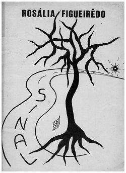
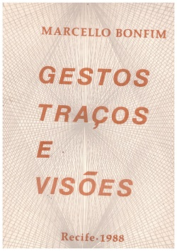
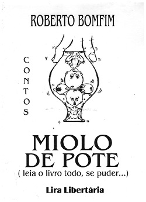
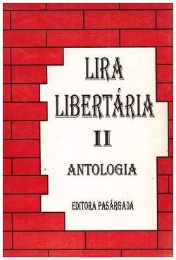

Missão
Editar de livros mais baratos, na quantidade e qualidade adequadas de acordo com as necessidades editoriais dos autores, principalmente dos autores iniciantes na carreira de escritor.
Objetivos
Dar suporte técnico aos escritores novatos, auxiliando-os na escolha do tipo de livro mais adequado às suas necessidades.
Sobre o Editor
A Editora Máquina de Ler nasceu de um antigo sonho do poeta e professor Carlos Dantas que desde a infância trabalhara na pequena gráfica de seu pai, ainda no tempo do mimeógrafo. Foi lá que aprendeu todas as etapas de confecção de livros e apostilas. Depois de publicar os seus primeiros livros: <FRAGMENTOS, A JANELA E COLCHA DE RETALHOS, teve a ideia de produzir livros de outros autores, como o do cantor e compositor pernambucano Silvério Pessoa, intitulado Andanças(1987). No ano seguinte, produziu e prafaciou o livro de poemas de Rosália Fiqueiredo, intitulado SINAL. No mesmo ano, produziu e também prefaciou o livro de poemas de ator e produtor cultural Marcello Bonfim, intitulado GESTOS, TRAÇOS E VISÕES.  
Depois, editou o livro do poeta e cineasta Roberto Bomfim, intitulado Miolo de Pote. Com relação à edição de antologias de textos tanto poéticos como em prosa, a primeira foi lançada em Recife, intitulada Caminhos da Palavra (1998). Em seguida, editou outras antologias em Fortaleza, com o título de Lira Libertária I e II (1998) e Lira Libertária III (1999). Atualmente, está desenvolvendo a Coleção Saberes em quatro áreas do conhecimento: Direito, Educação, Tecnologia e Saúde.  Trata-se de antologias de ensaios científicos que visam democratizar o acesso à produção acadêmica por parte dos professores e dos alunos.
Nosso Estabelecimento
Benefícios
- Atendimento personalizado
- ISBN e Ficha Catalográfica
- Orçamento sem compromisso
- Organização do lançamento (banner incluso)